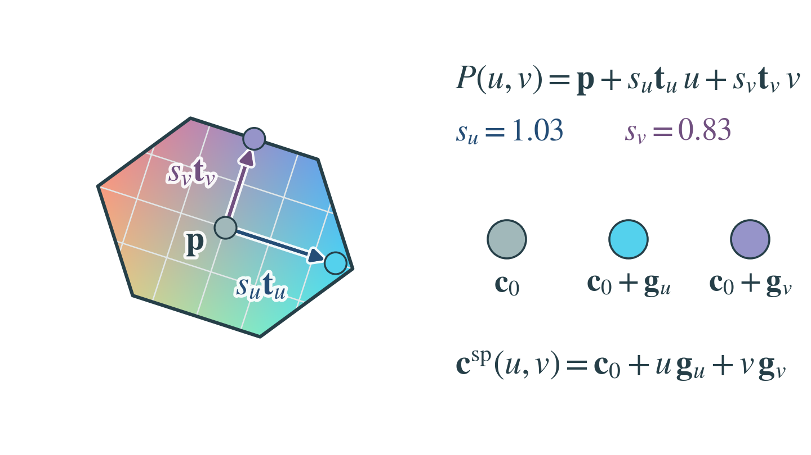
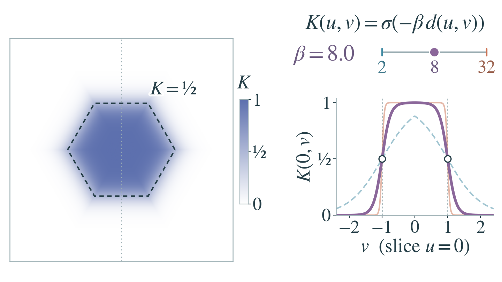
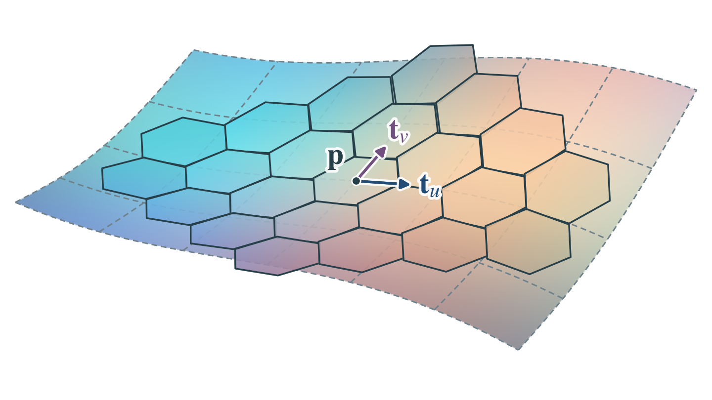
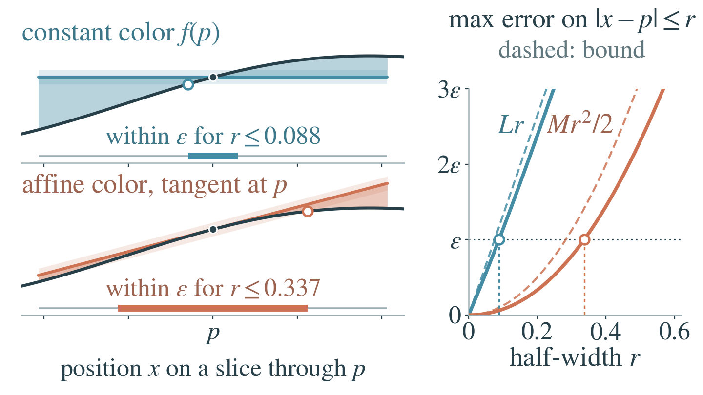
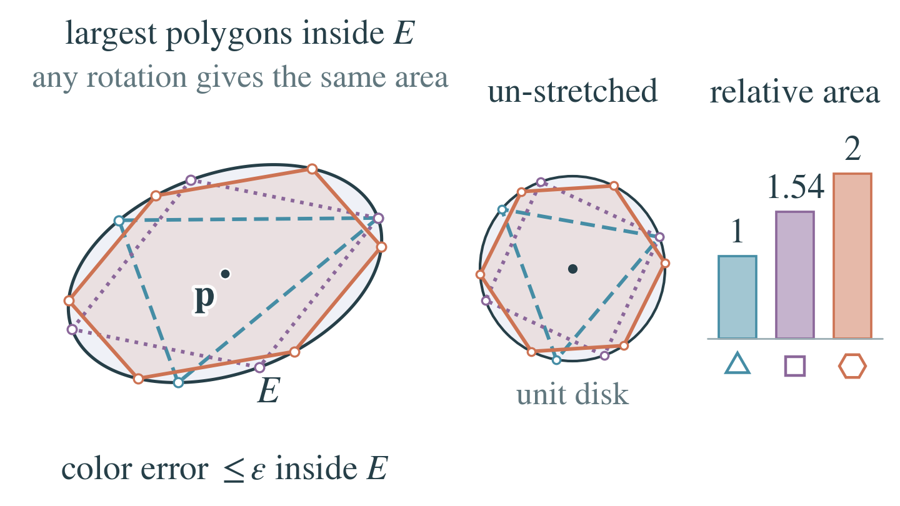
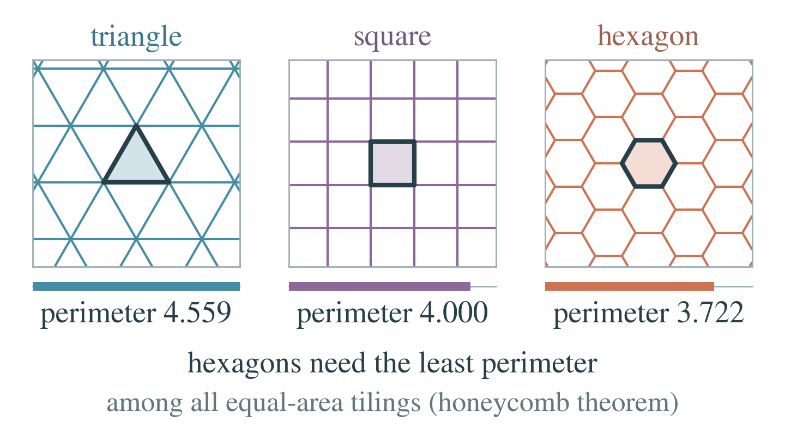
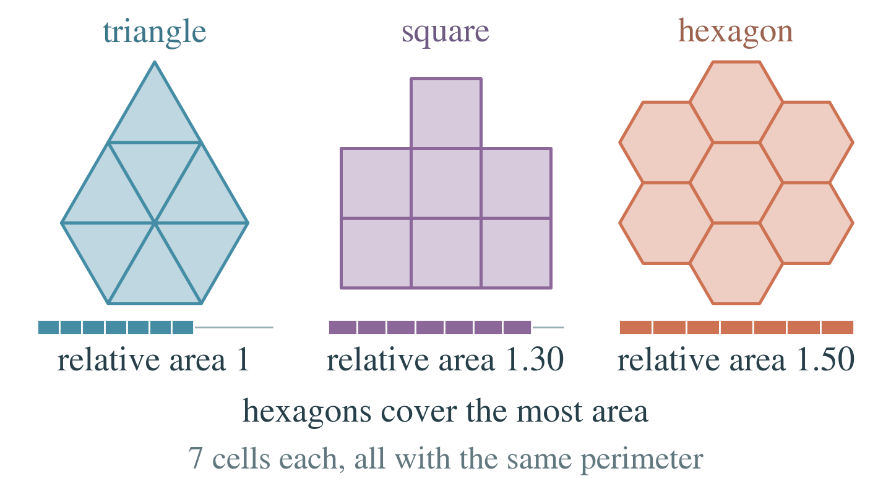
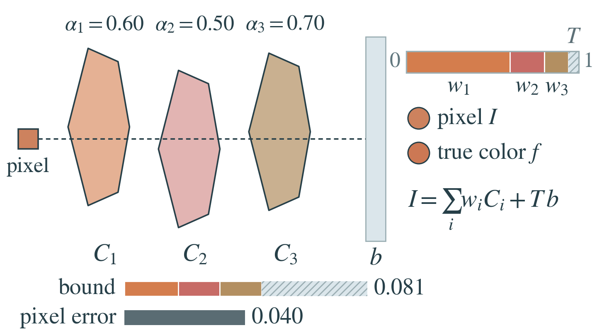

What is a Hexel?

Placing and coloring one Hexel
A Hexel maps its local coordinates \((u,v)\) into 3D and colors them linearly:
The scales \(s_u,s_v\) stretch the patch and the tangents \(\mathbf{t}_u,\mathbf{t}_v\) orient it about its center \(\mathbf{p}\). The color is \(\mathbf{c}_0\) at the center and changes by \(\mathbf{g}_u\) and \(\mathbf{g}_v\) per unit step along the two axes (swatches). A V1 Hexel has 20 parameters, nine of them for color.
In the paper: Section 3, Eqs. (1) and (4), and the center panel of Figure 2. The parameter count is in Appendix A.

Sharpness without moving the edge
The support weight \(K\) sets how strongly a Hexel covers each point. It is a sigmoid \(\sigma\) of a hexagonal distance \(d\) that is negative inside, zero on the boundary and positive outside:
The sharpness \(\beta\) turns \(K\) from a soft bump (\(\beta=2\)) into a nearly solid hexagon (\(\beta=32\)), but the boundary never moves: there \(d=0\), so \(K=\sigma(0)=\tfrac12\) for every \(\beta\) (open circles).
In the paper: Section 3, Eqs. (2) and (3), and the right panel of Figure 2.

Flat Hexels on a curved surface
Flat Hexels with linear color can together represent a smoothly colored curved surface. Each Hexel lies in the surface's tangent plane at its center \(\mathbf{p}\) and copies the value and slopes of the texture \(\mathbf{f}\) there:
with \(\partial_1,\partial_2\) the slopes along the two tangents. In this example every corner color stays within 0.023 of the texture (on a 0 to 1 scale), so neighboring Hexels nearly agree where they meet.
In the paper: the left panel of Figure 2, and Section 3, Eqs. (1) and (4). The Taylor coefficients are Eq. (27) in Appendix I.
Why a linear color field

Constant versus linear color
A linear color stays accurate over a much wider window than a constant one. For one color channel \(f\) near a patch center \(p\), compare the constant \(f(p)\) with the tangent line \(\ell_p(x)=f(p)+f'(p)\,(x-p)\) on a window \(|x-p|\le r\):
where \(L\) bounds the slope and \(M\) its rate of change. The constant's error grows linearly in \(r\) and the line's quadratically, so at tolerance \(\varepsilon=0.05\) the widest valid window (thick bar) has half-width 0.088 for the constant and 0.337 for the linear color, 3.8 times wider. This compares single color fields; blending several constant-color primitives can also vary the color.
In the paper: Appendix I, Proposition I.1 (Local error of an affine color field), Eq. (24) and the bound \(Mr^2/2\) stated with it. The constant-color bound \(Lr\) follows the proof.
Why a hexagon

The largest patch in one error ellipse
If a matrix \(\mathbf{Q}\) bounds how fast the color's slope changes in each direction, a linear color that matches the target's value and slope at \(\mathbf{p}\) stays within \(\varepsilon\) of it on the ellipse
The largest hexagon inside \(E\) covers twice the area of the largest triangle and about 1.30 times that of the largest square, the only other regular shapes that tile the plane. With its axes along those of \(E\) and \(\lambda_1,\lambda_2\) bounding the slope's change along them, the Hexel scales
put its six corners on \(E\). \(\mathbf{Q}\) describes the color, not the surface, and training does not estimate it.
In the paper: Appendix I, Proposition I.2 (Patch area within one error ellipse), Eqs. (29) to (31) and (35). Eq. (30) gives the largest areas, and the bound on \(\mathbf{Q}\) is Eq. (23) of Proposition I.1.


Least perimeter, most area
For the three regular tilings, a regular \(m\)-gon with perimeter \(P\) has area
so the hexagon has the least perimeter at equal area and the most area at equal perimeter.
Equal area. Unit-area cells have perimeters 4.559 (triangle), 4.000 (square) and 3.722 (hexagon), so at the same tracing speed the hexagon closes first. The honeycomb theorem (Hales, 2001) extends this to every partition of the plane into equal-area cells: regular hexagons need the least boundary per cell.
Equal perimeter. Seven cells of equal perimeter cover 1, 1.30 and 1.50 times the triangles' area.
In the paper: the equal-area side in Section 3 (Hexagonal support), the equal-perimeter side in the Introduction, and the theorem again at the opening of Appendix I, all citing Hales (2001).
From primitives to pixels

How Hexel errors reach the pixel
A pixel mixes the colors along its ray, so its error is at most the same mix of their errors. Hexel \(i\) contributes its opacity \(o_i\) times its support weight \(K_i\), capped at 0.99, \(\alpha_i=\min\{o_i\cdot K_i,\,0.99\}\), and the background \(b\) receives the remaining transmittance \(T\):
For the pixel \(I=\sum_iw_iC_i+T\,b\) and a target color \(f\),
The bound holds for any norm and primitive shape. A small \(T\) still matters when \(b\) is far from \(f\), so every part, the background included, must approximate the pixel target.
In the paper: Appendix I, Proposition I.3 (Error under alpha compositing), Eq. (37). The renderer's compositing is Eq. (17) in Appendix B.
In short
A linear color stays within a color tolerance over a larger patch than a constant color does. Within that tolerance, the largest stretched hexagon covers twice the area of the largest stretched triangle and about 1.30 times that of the largest stretched square. Hexagons also tile the plane, with the least perimeter at equal cell area and the most area at equal perimeter. Where Hexels overlap, a pixel's error is at most the weighted sum of their errors and that of the background. So fewer, larger Hexels can represent locally planar regions with smoothly varying appearance.
In the paper: Appendix I, Propositions I.1 to I.3.